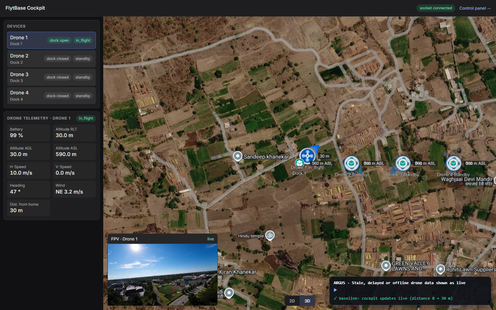
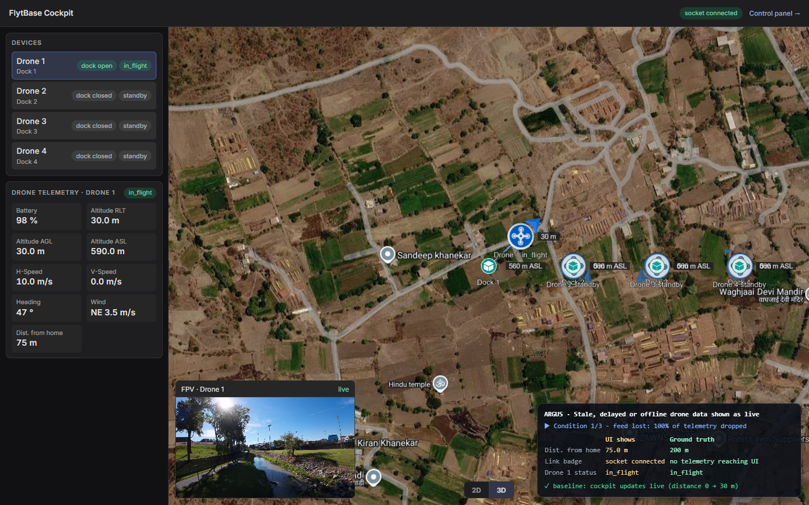
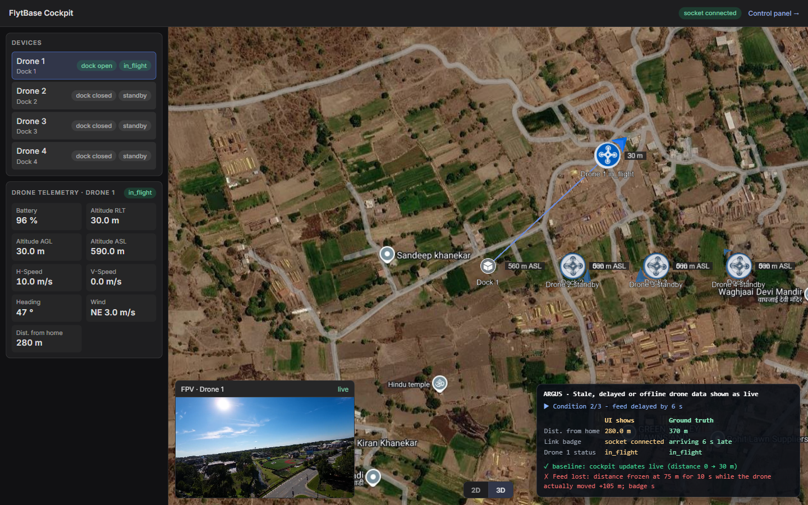
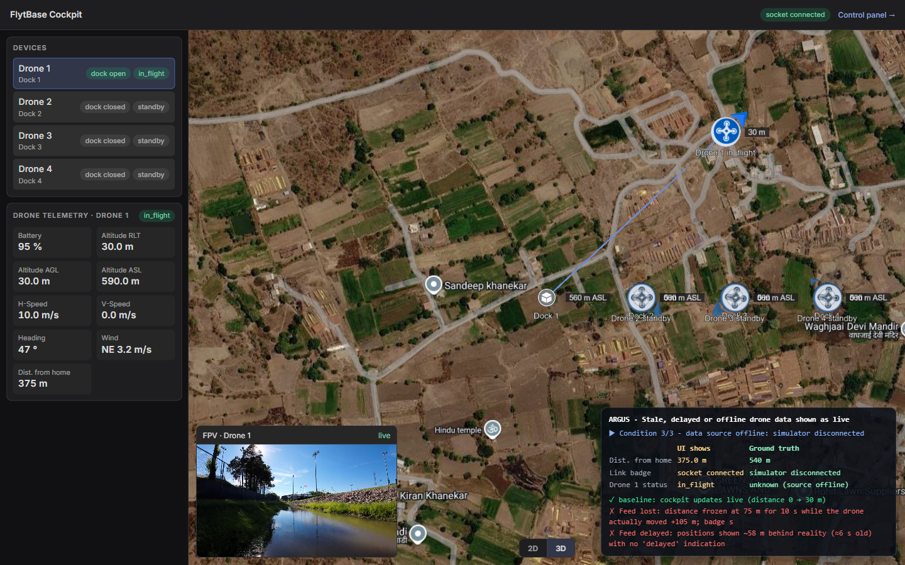

Argus Live — Evaluation Document
Argus Live ran 10 scenario(s) against the FlytBase cockpit starter kit with real Chrome browsers, independent ground truth from the simulator and control API, and narrated recordings as evidence. It found 5 genuine issue(s) across 5 scenario(s) (verdict BUG) and confirmed 5 scenario(s) PASS with no false positives, covering level(s) L1, L2, L3 and categories: Functional / Video; Map / Visual; Network and recovery; Performance / Long-running; Real-time and multi-user; Responsive UI; Responsive UI / Visual; Security and permissions; Telemetry / freshness; Video and media. Every issue is reported once, with its grouped symptoms, timed samples, screenshots and a real-time video in which the HUD shows the UI's claim next to the ground truth.
System design
Argus Live tests the cockpit the way an operator would and decides with independent evidence. It is built on Playwright driving real Chrome with Chrome DevTools Protocol access, and reuses Argus's self-healing semantic engine: the UI is read by meaning, so small markup changes do not break the probes.
Operators. Real Chrome browsers at desktop, tablet and phone viewports, with touch and mobile emulation; a scenario can open several independent users, each in its own browser context, so multi-user behaviour is genuine.
Scenario engine. Each scenario declares a starting state (simulator reset, drones airborne) and steps, then changes conditions through the starter kit's control API: socket-drop / socket-delay, sim-offline, video faults (freeze, black, wrong source), socket-refuse / kick, device emulation and multi-user sessions.
Probes. Probes read only what the user can see: the UI by meaning (labels and visible text, anchored to data-testids); the video element (decoded-frame counters and a perceptual frame hash drawn to a canvas); the Cesium map (entities, label text and screen positions found by walking the React fiber to the live viewer); and layout geometry (bounding boxes, elementFromPoint occlusion, scrollability).
Ground truth. Simulator state, backend health and the active fault list come from the control API plus a socket feed that subscribes exactly like the cockpit does — never from the UI under test.
Oracles. Compare the two sides: UI versus truth within tolerance, freshness honesty (stale or delayed data must say so), reachability, occlusion, map-label overlap, multi-user propagation lag, and recovery after outages.
Triage. Verdicts are deterministic, and symptoms that share a root cause are grouped into one issue. Precision guards prevent false positives — for example a control is scrolled into view before it may be called unreachable.
Evidence. Every run records each operator in real time with a HUD overlay narrating the step, the UI's claim, the ground truth and the verdict, alongside screenshots, timed samples and a machine-readable result.json. The recording is the report.
Operators (real Chrome: desktop / tablet / phone, independent users)
|
v
Scenario engine --(control API)--> changing conditions
starting state, steps socket-drop/delay, sim-offline,
| video faults, socket-refuse/kick
v
Probes --> UI claims: text by meaning + test ids, video frame
| counters & frame hashes, Cesium entities via React
| fiber, layout / occlusion geometry
v
Oracles <-- Ground truth (simulator state, backend health, active faults)
| UI vs truth, freshness honesty, reachability, occlusion,
| overlap, propagation lag, recovery
v
Triage (deterministic verdicts, root-cause grouping, precision guards)
|
v
Evidence (HUD-narrated recordings, screenshots, samples, result.json
--> EVALUATION.md + runs/live/index.html)
Scenarios
1. Stale, delayed or offline drone data shown as live S1-freshness
Description. An operator relies on the cockpit to know whether a drone's position and status are current. When the telemetry feed is lost, delayed or its source goes offline, the cockpit should say so instead of presenting old data as live.
Approach. Argus flies Drone 1 via the control API, proves the cockpit updates live, then injects three conditions (socket-drop 100%, socket-delay 6 s, sim-offline). Every 2 s it compares the on-screen distance, status and link badge with the simulator's true position and the backend's health, and looks for any stale/delayed wording. Symptoms with the same root cause are grouped into one issue.
Starting state. simulator reset, Drone 1 takes off, operator opens the cockpit
Steps.
- Condition 1/3 - feed lost: 100% of telemetry dropped
- Condition 2/3 - feed delayed by 6 s
- Condition 3/3 - data source offline: simulator disconnected
Result: BUG
Stale, delayed or offline drone data is presented as live — severity High
The cockpit has no per-device freshness state. The only signal is the socket badge, which describes the browser-to-backend socket, not whether drone data is current. Argus grouped 3 symptoms under this one root cause.
Grouped symptoms (3, one root cause):
- Feed lost: distance frozen at 75 m for 10 s while the drone actually moved +105 m; badge still 'socket connected', no stale warning
- Feed delayed: positions shown ~58 m behind reality (≈6 s old) with no 'delayed' indication
- Source offline: backend reports the simulator disconnected, but Drone 1 is still shown 'in_flight' under a 'socket connected' badge
Evidence. Key samples (UI claim vs ground truth):
| condition | ui_distance | truth_distance | socket_badge | ui_status | simulator | t |
|---|---|---|---|---|---|---|
| socket-drop | 75 | 95 | socket connected | in_flight | connected | 20.5 |
| socket-delay | 245 | 265 | socket connected | in_flight | connected | 37.4 |
| sim-offline | 355 | 435 | socket connected | in_flight | disconnected | 54.4 |
| sim-offline | 375 | 540 | socket connected | in_flight | disconnected | 64.7 |
   


Video. S1-freshness/video.mp4 (TODO: upload and link)
2. Frozen drone video still labelled 'live' S2-frozen-video
Description. When a drone's video stream freezes, the operator must not be told the picture is live.
Approach. Argus measures decoded frames per second on the real <video> element and the tile's label every second after injecting video-freeze for Drone 1, and records how long a frozen picture keeps the 'live' label.
Starting state. operator opens the cockpit; Drone 1's FPV video is playing
Steps.
- Condition: Drone 1's stream freezes (video-freeze, 15 s)
Result: BUG
Frozen drone video keeps the 'live' label for 5 s — severity High
While the stream was frozen (0 frames decoded), the tile still said 'live'; it only admitted the problem after 6 s.
Grouped symptoms (1, one root cause):
- 5 consecutive seconds with 0-1 frames/s under a 'live' label
Evidence. Key samples (UI claim vs ground truth):
| second | frames_per_s | video_label | t |
|---|---|---|---|
| 1 | 1 | live | 10.1 |
| 6 | 1 | reconnecting | 15.7 |
| 14 | 0 | reconnecting | 23.9 |

Video. S2-frozen-video/video.mp4 (TODO: upload and link)
3. Video tile covers the map's 2D/3D switch on a phone S4-phone-map-toggle
Description. An operator on a phone switches the map to 2D.
Approach. Argus finds the 2D button, checks what element is actually on top at its centre, taps it with a real touch and verifies whether the map mode changed.
Starting state. operator on a phone wants to switch the map to 2D
Steps.
- Tap the 2D button where it is drawn
Result: BUG
On a phone the video tile covers the 2D/3D map switch, so tapping 2D does nothing — severity Medium
The 2D button's centre is covered by video-player; a real tap on it did not change the map mode.
Grouped symptoms (1, one root cause):
- 2D button rect [151, 802, 44, 29] covered by video-player

Video. S4-phone-map-toggle/video.mp4 (TODO: upload and link)
4. Drone and dock labels overlap on the map S5-map-labels
Description. The operator reads each drone's status from its map label.
Approach. Argus reads the map's real label entities from the running Cesium viewer (text, screen position, font) and measures overlap between label boxes.
Starting state. operator scans the map to read each drone's status
Result: BUG
Drone and dock labels are drawn on top of each other on the map — severity Medium
Labels for a drone and its dock (same position) and the altitude labels overlap, so the drone's status text is unreadable at the default map view.
Grouped symptoms (6, one root cause):
- 'Dock 1' overlaps 'Drone 1 standby' (75% of the smaller label)
- '560 m ASL' overlaps '0 m' (100% of the smaller label)
- 'Dock 2' overlaps 'Drone 2 standby' (75% of the smaller label)
- '560 m ASL' overlaps '0 m' (100% of the smaller label)
- 'Dock 3' overlaps 'Drone 3 standby' (75% of the smaller label)
- '560 m ASL' overlaps '0 m' (100% of the smaller label)

Video. S5-map-labels/video.mp4 (TODO: upload and link)
5. Anyone can command drones without signing in S9-unauth-control
Description. Only authorised incident staff should be able to fly or land drones.
Approach. Argus acts as a stranger with a fresh browser (no session): follows the cockpit's own Control panel link and presses Take off, then sends the same command from a page on a different origin. The simulator confirms whether each drone really took off.
Starting state. a stranger with no account or session opens the cockpit URL
Steps.
- They follow the cockpit's own 'Control panel' link
- ...and press 'Take off' on Drone 3
- Second check: read the control API's CORS policy from its response headers (no command sent)
Result: BUG
Flight commands need no sign-in and the control API trusts any origin — severity Critical
Take off / land require no authentication or authorization, and the API's CORS policy is open, so access is not restricted to trusted operators. (The starter kit disables auth for the hackathon; for a real incident product this is a critical gap that the tester flags.)
Grouped symptoms (2, one root cause):
- A visitor with no sign-in opened the control panel from the cockpit link and took off Drone 3
- The control API replies with Access-Control-Allow-Origin: * and requires no auth token, so any origin is trusted to send flight commands
Evidence. Key samples (UI claim vs ground truth):
| stranger_took_off_drone3 | control_api_cors | t |
|---|---|---|
| True | {"ok":true,"status":200,"access_control_allow_origin":"*"} | 10.5 |


Video. S9-unauth-control/video.mp4 (TODO: upload and link)
6. Responsiveness with 16 flying drones over about 10 simulated minutes S10-load-long-run
Description. The cockpit must stay usable when many drones fly and data keeps streaming for a long time.
Approach. Argus measures frames per second, long tasks, click-to-paint latency and JS heap at rest, then adds 12 drones, flies all 16 at 5x simulator speed and samples the same metrics four times.
Starting state. reset to 4 drones on their docks; measure the cockpit at rest
Steps.
- Condition: 12 more drones join, all fly, simulator runs 5x faster (~10 simulated minutes)
Result: PASS — verified: The cockpit must stay usable when many drones fly and data keeps streaming for a long time. Every probe matched ground truth; no finding was raised.
Evidence. Key samples (UI claim vs ground truth):
| phase | fps | long_task_ms | long_tasks | click_to_paint_ms | heap_mb | rows | t |
|---|---|---|---|---|---|---|---|
| at rest | 60.2 | 0 | 0 | 36.4 | 60.4 | 4 | 13 |
| load 1 | 29.8 | 0 | 0 | 36.9 | 102 | 16 | 29.4 |
| load 2 | 34.2 | 0 | 0 | 33.3 | 151.6 | 16 | 45.5 |
| load 3 | 30.5 | 0 | 0 | 27.1 | 82.5 | 16 | 61.6 |

Video. S10-load-long-run/video.mp4 (TODO: upload and link)
7. Battery and altitude unreachable on a phone S3-phone-telemetry
Description. A field operator on a phone needs the selected drone's battery and altitude.
Approach. Argus opens the cockpit at 390×844 with touch, locates every telemetry field by its meaning, tries to scroll to it and checks whether each field is inside the screen and not covered by another element.
Starting state. field operator opens the cockpit on a phone (390×844)
Steps.
- Look for the selected drone's battery, altitude and speed
- Try to scroll the page to reach the telemetry panel
Result: PASS — verified: A field operator on a phone needs the selected drone's battery and altitude. Every probe matched ground truth; no finding was raised.

Video. S3-phone-telemetry/video.mp4 (TODO: upload and link)
8. Connection loss and recovery S6-reconnect
Description. When the server connection drops, the operator should be told, and the cockpit should recover and catch up.
Approach. Argus kicks every socket and refuses reconnects for 10 s via the control API, records the link badge during the outage, then measures how long the cockpit takes to match the simulator again and whether rows duplicate.
Starting state. Drone 1 in flight, operator watching telemetry
Steps.
- Condition: server drops every cockpit socket and refuses reconnects for 10 s
- Server accepts connections again - does the cockpit recover and catch up?
Result: PASS — verified: When the server connection drops, the operator should be told, and the cockpit should recover and catch up. Every probe matched ground truth; no finding was raised.
Evidence. Key samples (UI claim vs ground truth):
| phase | badge | t | second | ui_distance | truth_distance |
|---|---|---|---|---|---|
| outage | socket reconnecting | 12.7 | |||
| outage | socket connected | 22.8 | |||
| recovery | socket connected | 24.3 | 1 | 140 | 140 |
| recovery | socket connected | 38.8 | 15 | 285 | 285 |


Video. S6-reconnect/video.mp4 (TODO: upload and link)
9. Two operators see the same take-off S7-two-operators
Description. Several people watch the same incident; a change must reach every screen promptly.
Approach. Argus opens two independent operators (desktop and tablet), takes off Drone 2 through the control API and times when each screen shows it in flight relative to the simulator.
Starting state. two operators have the cockpit open at the same time
Steps.
- Drone 2 takes off (issued from the control API) - both screens must agree with the simulator
Result: PASS — verified: Several people watch the same incident; a change must reach every screen promptly. Every probe matched ground truth; no finding was raised.
Evidence. Key samples (UI claim vs ground truth):
| truth_in_flight_at | operator_A_at | operator_B_at | lag | t |
|---|---|---|---|---|
| 9.5 | 9.5 | 9.5 | {"A":0.0,"B":0.0} | 23.9 |


Video. S7-two-operators/video.mp4 (TODO: upload and link)
10. Selecting another drone switches telemetry and video together S8-switch-drone
Description. Selecting a drone should show that drone's state and video together.
Approach. Argus selects Drone 2, compares telemetry with the simulator and compares a perceptual hash of the video frame before and after the switch.
Starting state. operator watches Drone 1, then selects Drone 2
Result: PASS — verified: Selecting a drone should show that drone's state and video together. Every probe matched ground truth; no finding was raised.
Evidence. Key samples (UI claim vs ground truth):
| frame_hash_distance | battery_ui | battery_truth | title_before | title_after | t |
|---|---|---|---|---|---|
| 47 | 100 | 100 | 2D 3D FPV · Drone 1 live | 2D 3D FPV · Drone 2 live | 15.6 |

Video. S8-switch-drone/video.mp4 (TODO: upload and link)
How to reproduce
# 1. Start the cockpit starter kit (Docker): cd flytbase-ahc-swe-qa-hackathon && docker compose up --build # cockpit UI http://localhost:4010, backend + control API http://localhost:4000/api # 2. Run the scenarios (real Chrome, recordings on): argus live run # everything argus live run --only S1 # one scenario by id prefix argus live run --only S1 --only S6 --headless # 3. Regenerate this evaluation document from the stored results: argus live report # 4. Browse the evidence (videos embedded for local viewing): # runs/live/index.html